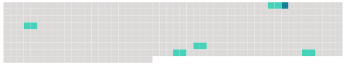

Longueur nb maillons : 6 mentions |
 |
À quelque temps de là, à l’ école, où Christophe passait son temps à regarder les mouches au plafond et à donner des coups de poing à ses voisins, pour les faire tomber du banc, [le maître] [qui] l’ avait pris en grippe, parce qu’ il remuait toujours, parce qu’ on l’ entendait toujours rire, et parce qu’ il n’ apprenait jamais rien, fit une allusion inconvenante, un jour que Christophe s’ était lui -même laissé choir, à certain personnage bien connu dont il semblait vouloir suivre brillamment les traces. [2 phrases]
[Le maître] tomba sur lui à coups de poing ; il fut fustigé, mis à genoux, et condamné à un pensum énorme. [7 phrases] Melchior l’ empoigna, le porta à l’ école et le remit [au maître] Revenu à son banc, il commença par casser méthodiquement tout ce qui se trouvait à sa portée : son encrier, sa plume, il déchira son cahier et son livre, – le tout d’ une façon bien visible, en regardant [le maître] d’ un air provocant. [1 phrases]
– Quelques instants après, [le maître] le trouva, son mouchoir noué autour du cou, tirant de toutes ses forces sur les deux coins : il tâchait de s’ étrangler. |
 |
Il est possible de télécharger la ressource sur la page Ortolang |
Si vous avez des questions ou vous voyez des erreurs, merci d'envoyer un mail à silvia.federzoni89@gmail.com |